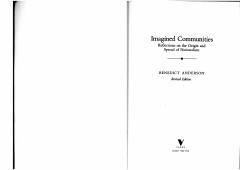

ICMillatchilikning kelib chiqishi va uning tarqalish tarixini o'rganuvchi mashhur ilmiy asar.
Kitob millatchilikning kelib chiqishi va tarqalish tarixini o'rganib, millat tushunchasini ijtimoiy jihatdan tasavvur qilingan jamoa sifatida talqin qiladi. Muallif madaniy ildizlar, bosma kapitalizm va imperializm milliy ongni shakllantirishdagi o'rnini ilmiy tahlil qiladi.